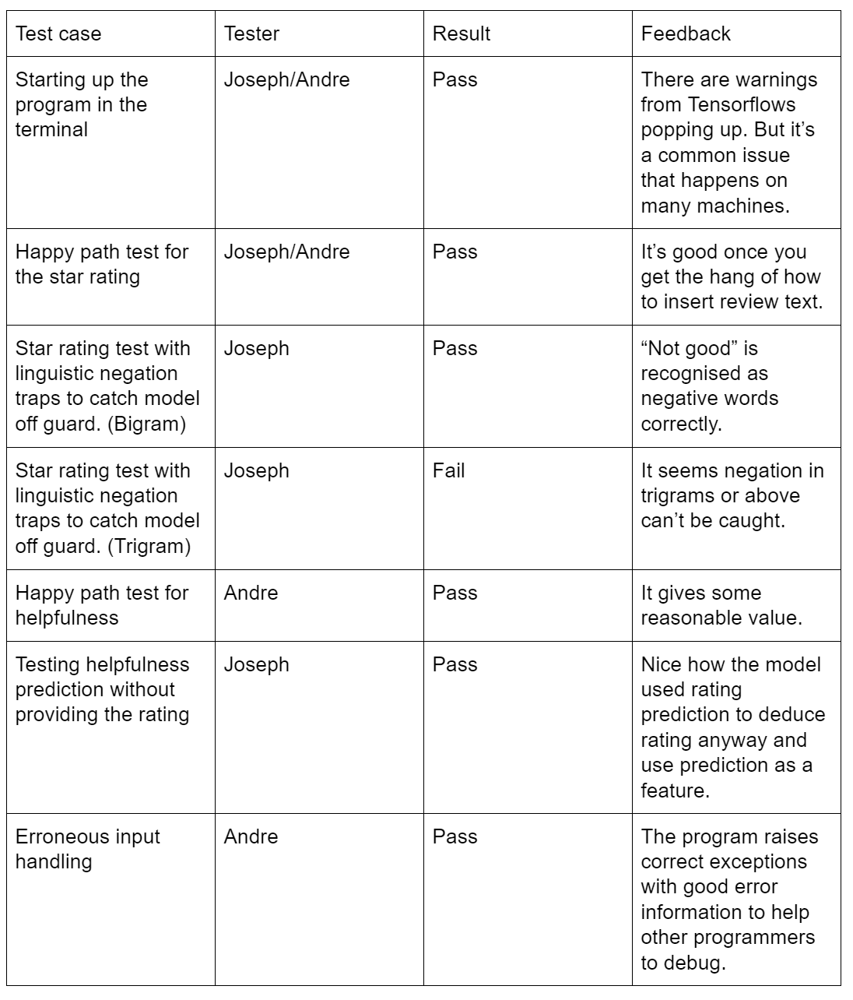

Please note, this page mainly focuses on the correctness of our code, i.e., the code we wrote does what we expected. The correctness of our testing and experiments methods are discussed under Algorithms page.
Testing Strategy
Since our project is heavily research-based, most of our code is untestable in terms of unit tests, e.g., code for plotting graphs/tables, experimenting Machine Learning models and basically everything written inside Jupyter Notebook. Thus, for this part of the project, we mainly applied manual testing: we estimated the expected behaviour of ML models and compared them with the actual results, when there’s a huge difference we’ll try to explain it or look through the code to see if there’s any error. After this, we would report the experiment results to other team members and our clients to discuss if there’s any potential error. At the end of this project, we went through all the notebooks again to correct and rerun the experiments.
For other parts of the project, e.g., the extracted jupyter helper functions, the demo module and customized NLP processor, unit tests and integration tests are applied to ensure better efficiency and accuracy.
Automated Unit and Integration Testing
Before we start the actual experiments with NLP and ML, we tried to implement some customized NLP processors to improve our understanding of this subject. We implemented a simple Bag of Words vectorizer and Ngrams vectorizer. Unit tests (pytest) were written to ensure their behaviours are correct.
To reduce the expense of manual testing and improve the correctness, we extracted some common functions into a standalone python module called jupyter_helper. Unit tests are used to test the testable parts of the module, including the functions for extracting data from the data file, filtering the unneeded data etc. Those tests ensured the API and functionalities are correct.
Of course, we also used unit and integration tests for our demo module -- review_analyser. It is a standalone module that can read data and train Neural Network models with proper hyperparameters we found through experiments. Unit tests are used to ensure ReviewData, which handles data from CSV file and is a subclass in the module, has the right behaviours. The standalone methods of the ReviewAnalyser class are tested with unit tests, e.g., train models from direct inputs, use the model to predict ratings etc. The methods that require ReviewData, e.g., train models from csv file, were tested through Integration tests directly as we believe there is much point in using mocks to separate them.
We tested all the testable methods, but some were left and tested manually, e.g., the ability to store models into a local file and read them back into memory. This is because, firstly, including those tests would add extra dependencies. Secondly, unit tests aren’t very effective in this case, e.g., when testing the function of reading model data, anyone can force the tests to pass by simply removing the stored model data files, but the ability to take the data and use them to create models are actually not tested.
User Acceptance Testing
We did user acceptance tests for the Python module that predicts helpfulness/star rating. The users in this case are should be our client’s software engineers. We got two software engineers (namely Joseph and Andre) from Ocado to test our program as users. The table below shows the test cases and feedback obtained:
